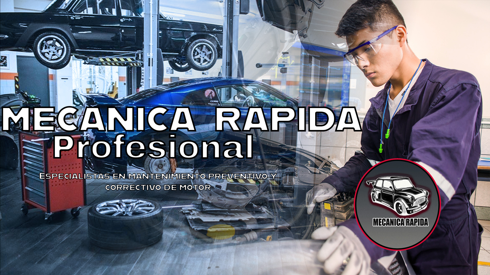

Servicios principales
- ✔ Cambio de aceite
- ✔ Diagnóstico computarizado
- ✔ Reparación de frenos
- ✔ Afinación automotriz
- ✔ Servicio eléctrico

Bienvenido a nuestro taller mecánico. Nos especializamos en reparación automotriz, mantenimiento preventivo y diagnóstico de fallas. Contamos con técnicos capacitados y herramientas modernas para dejar tu vehículo en las mejores condiciones.

Nuestro taller de mecánica rápida fue creado con el objetivo de ofrecer servicios automotrices de calidad para todos los conductores que buscan mantener su vehículo en buenas condiciones.
Contamos con técnicos capacitados que tienen experiencia en diferentes áreas de la mecánica automotriz y trabajan utilizando herramientas modernas para brindar un servicio rápido, seguro y confiable.

El mantenimiento automotriz es fundamental para garantizar el buen funcionamiento de cualquier vehículo y evitar problemas mecánicos que puedan generar gastos mayores.
Entre los servicios más importantes se encuentran el cambio de aceite, frenos, alineación, balanceo y revisión del sistema eléctrico para asegurar un manejo seguro.
Nuestro compromiso principal es brindar un servicio honesto y de alta calidad, ofreciendo soluciones rápidas y efectivas para cada vehículo.
Además, ofrecemos precios accesibles y promociones especiales en diferentes servicios para apoyar a nuestros clientes y mantener sus automóviles en óptimas condiciones.